공조냉동기계기사(구) (2003-03-16 기출문제)
1과목: 기계열역학
1. 비가역 사이클의 내부에너지 변화량 Δ U는?
- Δ U = 0
- Δ U ＞ 0
- Δ U ＜ 0
- Δ U ＞ 1
(정답률: 32%)

2. 어떤 기체 1 ㎏이 압력 100 kPa, 온도 30℃의 상태에서 체적 0.8 m3을 점유한다면 기체상수는 몇 kJ/kg.K인가?
- 0.251
- 0.264
- 0.275
- 0.293
(정답률: 50%)
3. 밀폐 시스템의 가역 정압 변화에 관한 다음 사항 중 올바른 것은? (단, u ; 내부에너지, Q ; 전달열, h ; 엔탈피, v ; 비체적, W ; 일이다)
- d u = δ Q
- d h = δ Q
- d v = δ Q
- d W = δ Q
(정답률: 49%)
4. 밀폐 시스템이 압력 P1 = 2 bar, 체적 V1 = 0.1 m3 인 상태에서 P2 = 1 bar, V2 = 0.3 m3인 상태까지 가역 팽창 되었다. 이 과정이 P-V 선도에 직선으로 표시된다면 이 과정동안 시스템이 한 일은?
- 10 kJ
- 20 kJ
- 30 kJ
- 45 kJ
(정답률: 49%)
5. 수은 마노미터를 사용하여 한 장치 내의 공기 유동이 측정된다. 마노미터의 높이차는 30 ㎜이다. 오리피스 전후에서의 압력 강하는? (단, 수은의 밀도는 13600 ㎏/m3 이고, 중력가속도 g = 9.75 ㎧2이다.)
- 3978 Pa
- 3.978×109 Pa
- 3.978×106 Pa
- 3.978×104 Pa
(정답률: 47%)
6. 실제 기체가 이상 기체의 상태 방정식을 근사적으로 만족하는 경우는?
- 압력이 높고 온도가 낮을 때
- 압력이 낮고 온도가 높을 때
- 온도, 압력이 모두 높을 때
- 온도, 압력이 모두 낮을 때
(정답률: 47%)
7. 탄소 2 ㎏이 완전 연소할 때 생성되는 CO2 가스의 양은 몇 kg이 되겠는가?
- 2.75
- 3.66
- 5.33
- 7.33
(정답률: 22%)
8. 열기관이나 냉동기에서 작동유체(또는 냉매)의 고온쪽 온도를 Ta, 저온쪽 온도를 Tb, 외부의 고온열원 및 저온열원의 온도를 각각 Ta', Tb'라고 하고, 여기서 사이클이 가역이라면 다음의 온도 관계가 우선 성립해야 한다. 옳은 것은?
- Ta = Ta', Tb = Tb'
- Ta ＞ Ta' ＞ Tb' ＞ Tb
- Ta ＞ Ta', Tb ＞ Tb'
- Ta' ＞ Ta ＞ Tb ＞ Tb'
(정답률: 37%)
9. 온도가 -23℃인 냉동실로부터 기온이 27℃인 대기 중으로 열을 뽑아내는 가역 냉동기가 있다. 이 냉동기의 성능계수는?
- 3
- 4
- 5
- 6
(정답률: 57%)
10. 15 kW의 디젤 기관에서 마찰 손실이 그 출력의 15%일 때 손실에 의해서 시간당 발생되는 열량은?
- 4590 kJ
- 810 kJ
- 45900 kJ
- 8100 kJ
(정답률: 44%)
11. 랭킹 사이클에서 응축기 압력이 5 kPa이고 토출 압력이 10 MPa인 펌프의 일은 약 몇 kJ/㎏인가? (단, 물의 비체적은 0.001 m3/㎏으로 일정하다.)
- 3
- 5
- 10
- 15
(정답률: 43%)
12. 계기 압력이 0.6 MPa인 보일러에서 온도 15℃의 물을 급수하여 건포화증기 20 ㎏을 발생하기 위해 필요한 열량을 다음 표를 이용하여 산출하면 그 값은? (단, 대기압은 0.1 MPa, 물의 평균 비열은 4.18 kJ/kg℃ 이다.)
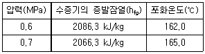
- 약 2.7 MJ
- 약 13.2 MJ
- 약 53.9 MJ
- 약 85.1 MJ
(정답률: 47%)
13. 작동 유체가 상태 1로부터 상태 2까지 가역변화 할 때의 엔트로피 변화에 관하여 다음 어느 것이 가장 알맞는가?
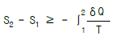
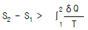
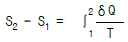
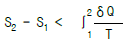
(정답률: 40%)
14. 20℃의 공기 5 kg이 정압 과정을 거쳐 체적이 2 배가 되었다. 공급한 열량은 몇 kJ인가? (단, 정압 비열은 1 kJ/kg.K 이다.)
- 1465
- 2465
- 3465
- 4465
(정답률: 49%)
15. 두 개의 등엔트로피 과정과 두 개의 정적 과정으로 이루어진 사이클은?
- Stirling 사이클
- Otto 사이클
- Ericsson 사이클
- Carnot 사이클
(정답률: 50%)
16. 액체 상태 물 2 kg을 30℃에서 80℃로 가열하였다. 이 과정 동안 물의 엔트로피 변화량을 구하면? (단, 액체 상태물의 비열은 4.184 kJ/kg.K로 일정하다.)
- 0.6391 kJ/K
- 1.278 kJ/K
- 4.100 kJ/K
- 8.208 kJ/K
(정답률: 49%)
17. 잘 단열된 노즐로 공기가 운동에너지가 무시될 정도의 매우 낮은 속도 800 kPa, 450 K의 상태로 들어가 150 kPa로 나온다. 노즐 효율은 90%이다. 출구에서 공기의 속도와 온도는? (단, 공기는 이상 기체이며, 정압 비열은 1.004kJ/kg.K, 비열비는 1.4이다.)
- 17.6 m/s, 279 K
- 17.6 m/s, 296 K
- 556 m/s, 279 K
- 556 m/s, 296 K
(정답률: 8%)
18. 유체가 20 m/s의 속도로 단열 노즐에 들어가서 400 m/s의 속도로 나온다면 엔탈피의 증가량은 몇 kJ/kg인가?
- 79.8
- -79.8
- 79800
- -79800
(정답률: 19%)
19. 2C2H6 + 7O2 = 4CO2 + 6H2O의 식에서 1 kmol의 C2H6가 완전 연소하기 위하여 필요한 산소량은?
- 1.5 kmol
- 2.5 kmol
- 3.5 kmol
- 4.5 kmol
(정답률: 47%)
20. 아음속 유동을 가속시켜 초음속 유동으로 만들려고 한다. 어떠한 노즐을 사용하면 가능한가?
- 단면적이 감소하는 축소 노즐을 사용한다.
- 단면적이 증가하는 확대 노즐을 사용한다.
- 단면적이 감소하였다가 증가하는 축소-확대 노즐을 사용한다.
- 단면적이 증가하였다가 감소하는 확대-축소 노즐을 사용한다.
(정답률: 35%)
2과목: 냉동공학
21. 현재 대용량의 냉동능력을 필요로 하는 공장에서는 스크류(screw) 압축기를 많이 사용하는 추세에 있다. 스크류 압축기의 특성에 관한 설명 중 틀린 것은?
- 압축원리에 있어서는 왕복식 압축기와 같으나 압축방법이 나사로타의 회전에 의해 행해진다.
- 압축기의 행정은 흡입, 압축, 토출행정의 3행정이다.
- 급유식 스크류 압축기의 토출가스 온도는 통상 70℃ 이상이며 가스압축은 등온압축에 가깝다.
- 급유식 스크류 압축기의 부속기기로서는 유분리기, 유냉각기, 오일필터, 오일펌프 등이다.
(정답률: 60%)
22. 다음 내용중 틀린 것은?
- 전도란 물체사이의 온도차에 의한 열의 이동현상
- 대류란 유체의 순환에 의한 열의 이동 현상
- 대류 열전달계수의 단위는 열통과율의 단위와 같다.
- 열전도율의 단위는 kcal/m2h℃ 이다.
(정답률: 63%)
23. 다음의 역카르노사이클에서 등온팽창과정을 나타내는 것은?
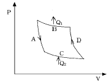
- A
- B
- C
- D
(정답률: 69%)
24. 다음은 냉매에 관한 설명이다. 맞는 것은?
- 비열비가 클 것
- 비체적이 클 것
- 표면장력이 작을 것
- 임계온도가 낮을 것
(정답률: 42%)
25. 암모니아를 냉매로하고 증발온도 -40℃, 응축온도 30℃ 중간냉각기의 팽창변 직전온도 28℃인 조건에서 2단압축 1단팽창 냉동사이클이 아래그림과 같다고 할 때 이 싸이클의 성적계수와 같은 온도 조건에서 단단 압축 할 때의 성적계수를 비교하면?
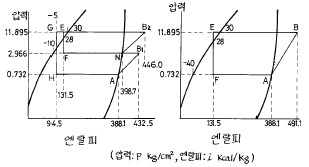
- C.O.P(2단/단단)=0.883
- C.O.P(2단/단단)=0.933
- C.O.P(2단/단단)=1.133
- C.O.P(2단/단단)=1.233
(정답률: 37%)
26. 냉동장치에서 흡입가스의 압력을 저하시키는 원인과 관계가 없는 것은?
- 냉매 유량의 부족
- 흡입배관의 마찰손실
- 냉각부하의 증가
- 모세관의 막힘
(정답률: 60%)
27. 왕복동식 압축기의 체적효율이 감소하는 이유는?
- 단열 압축지수의 감소
- 압축비의 감소
- 극간비의 감소
- 흡입 및 토출밸브에서의 압력손실의 감소
(정답률: 52%)
28. 40RT의 브라인 쿠울러에서 입구온도 -15℃일 때 브라인의 유량이 0.5m3/min이라면 출구의 온도는 몇℃인가? (단,브라인의 비중은 1.27,비열은 0.66kcal/kg℃이다.)
- -20.28
- -16.75
- -11.21
- -9.72
(정답률: 26%)
29. 다음 P - i 선도와 같은 2단 압축 2단 팽창 사이클로 운전되는 NH3 냉동장치에서 고단측 냉매 순환량은 얼마인가?(단, 냉동능력은 55000㎉/h이다.)
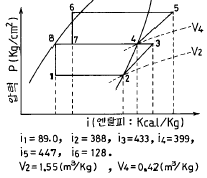
- 210.8 (kgf/h)
- 220.7 (kgf/h)
- 233.5 (kgf/h)
- 242.9 (kgf/h)
(정답률: 34%)
30. 팽창밸브의 역할 중 틀린 것은?
- 압력강하
- 온도강하
- 냉매량 제어
- 증발기에 오일 흡입방지
(정답률: 65%)
31. 냉동장치에서 발생한 불응축 가스를 제거하고자 한다. 가스퍼저(Gas Purger)의 설치위치로 가장 적당한 곳은?
- 응축기
- 유분리기
- 압축기
- 액분리기
(정답률: 53%)
32. 리튬 브로마이드 수용액을 사용하는 흡수식 냉동기의 증발기속의 압력은 보통 어느 정도인가?
- -655㎜Hg
- -675㎜Hg
- -7⑤㎜Hg
- -755㎜Hg
(정답률: 34%)
33. 다음 설명 중 옳은 것은 어느 것인가?
- 증발압력 조정밸브의 능력은 밸브의 구경,증발온도와 밸브전후의 압력차에 의하여 결정된다.
- 플로우트 밸브의 구경이 크면 클수록 조정하기가 쉽다.
- 암모니아의 액관중에 건조기를 설치하여 액중의 수분을 제거하는 것이 꼭 필요하다.
- R12 만액식 증발기에는 냉동유 회수장치가 필요없다.
(정답률: 48%)
34. 다음 글은 증발기에 관한 내용이다. 잘못 설명된 것은?
- 냉매는 증발기속에서 습증기가 건포화 증기로 변한다
- 건식 증발기는 압축기로의 오일 순환이 잘 된다.
- 만액식 증발기에서는 첵 밸브를 설치하여 가스의 역류를 방지한다.
- 액 순환식 증발기는 액 펌프나 액 분리기가 필요 없으므로 소형 냉동기에 유리하다.
(정답률: 65%)
35. 고속다기통 압축기의 냉동용량 제어장치는?
- 압축기 회전수를 가감하는 방법
- 클리어런스 포켓을 이용하는 방법
- 바이패스에 의한 방법
- 언로우더에 의한 방법
(정답률: 39%)
36. 고압가스 제상방식에서 필요 없는 것은?
- 압축기
- 제상 타이머
- 솔레노이드 밸브
- 유분리기
(정답률: 41%)
37. 왕복 압축기에 관한 설명 중 맞는 것은?
- 압축기의 압축비가 증가하면 일반적으로 압축 효율은 증가하고 체적효율은 낮아진다.
- 다기통 압축기의 용량제어에 언로우드를 사용하는 것은 압축기의 능력을 무단계로 제어 가능하기 때문이다
- 대형 다기통 압축기의 흡입 및 토출밸브에서는 일반적으로 링모양의 플레이트 밸브가 사용되고 있다.
- 2단 압축 냉동장치에서 저단측과 고단측의 실제 피스톤 토출량은 일반적으로 같다.
(정답률: 42%)
38. 프레온 냉동장치의 부속기기 및 배관에 관한 설명중 맞는 것은?
- 액가스 열 교환기를 사용하는 주된 목적은 냉매의 종류에 상관없이 장치의 성적계수를 대폭적으로 향상시키기 위한 것이다.
- 프레온 냉동장치의 액 스트레이너는 증발기와 팽창밸브 사이의 액관에 설치한다.
- 만액식 증발기에서 증발기 출구직후의 입상배관에서는 트랩을 설치해야 한다.
- 프레온 압축기의 흡입관은 흐름의 저항에 의한 압력 손실 및 압축기로의 유귀환을 고려해야 한다.
(정답률: 36%)
39. 냉방용 터어보 냉동기에 가장 적당한 냉매는?
- R - 123
- R - 12
- R - 22
- R - 122
(정답률: 40%)
40. 다음은 압축기의 체적효율에 대한 설명이다. 옳은 것은 어느 것인가?
- 톱 크리어란스(top clearance)가 작을수록 체적효율은 작다.
- 같은 흡입압력, 같은 증기 과열도에서 압축비가 클수록 체적효율은 작다.
- 피스톤 링(piston ring)및 흡입변의 시트(sheet)에서 누설이 작을수록 체적효율이 작다.
- 유(油)상승량이 적을 수록 체적효율은 작다.
(정답률: 60%)
3과목: 공기조화
41. 다음 중 수(물)방식의 특징이 아닌 것은?
- 자동제어가 어렵다.
- 기기분산으로 유지관리 및 보수가 어렵다.
- 습도제어가 불필요하다.
- 소형모터가 다수 설치되어 동력소모가 크다.
(정답률: 27%)
42. 건구온도 10℃,절대습도 0.003㎏/㎏'인 공기 50m3를 20℃까지 가열하는데 필요한 열량은 얼마인가? (단,공기의 정압비열 Cp = 0.24㎉/㎏℃, 공기의 비중량 r = 1.2㎏/m3)
- 120㎉
- 144㎉
- 288㎉
- 600㎉
(정답률: 50%)
43. 다음 용어의 조합 중 틀린 것은?
- 인체의 발생열 - 현열, 잠열
- 극간풍에 의한 열량 - 현열, 잠열
- 조명부하 - 현열, 잠열
- 외기 도입량 - 현열, 잠열
(정답률: 65%)
44. 환기의 대상을 분류한 것 중 적절치 못한 것은?
- 건축 공간의 환기는 인간과 물질을 대상으로 나눌수 있다.
- 인간을 대상으로 하는 환기는 위생상 요구와 비위생상 요구에 대응해야 한다.
- 물질을 대상으로 환기는 생산공정, 품질보존 등을 위한 수단이다.
- 건물의 비주거 공간(천정속, 바닥밑)의 환기는 인간과 물질 모두의 대상이다.
(정답률: 30%)
45. 멀티조운 유닛방식의 특징은?
- 혼합손실이 없어서 에너지 소비가 적다.
- 정풍량 장치가 없으므로 각실의 송풍량에 불균형이 생길 염려가 있다.
- 개별식이므로 부분 운전 및 시간차 운전에 적합하다.
- 각 조운의 부하 변동에 따라 송풍량이 변하므로 년간 송풍 동력이 작다.
(정답률: 19%)
46. 냉수코일에서 관(tube) 1개당 통과 권장 냉수량은 몇ℓ /min 인가?
- 6 - 16
- 16 - 26
- 26 - 36
- 36 - 46
(정답률: 52%)
47. 히트 파이프(heat pipe)가 교환하는 열은?
- 현열
- 현열과 잠열
- 잠열
- 흡수열
(정답률: 47%)
48. 일사를 받는 외벽으로 부터의 침입열량을 구하는 식은 다음 중 어느 것인가? (단, k:열통과율 A:면적 Δt:상당외기 온도차)
- q = k A Δt
- q = 0.86 A Δt
- q = 0.24 A Δt
- q = 0.29 A Δt
(정답률: 62%)
49. 덕트계통의 방화구획부분 등에 설치하는 댐퍼로서 풍량조절과 화염, 연기 등을 차단하는 목적에 사용되는 것은?
- 볼륨댐퍼(VD)
- 화이어 볼륨댐퍼(FVD)
- 화이어 댐퍼(FD)
- 스플릿트 댐퍼(SD)
(정답률: 45%)
50. 건구온도 30℃, 절대습도 0.017 kg/kg´ 인 습공기 1kg의 엔탈피는 약 몇 kcal/kg인가?
- 8
- 12
- 14
- 18
(정답률: 30%)
51. 다음 사항 중 난방 부하와 관계가 적은 것은?
- 외기부하
- 틈새 바람에 의한 부하
- 벽체 에서의 손실열량
- 인체 및 기구의 발생열량
(정답률: 56%)
52. 다음중 송풍기와 덕트의 접속법으로 가장 부적당한 것은?
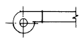
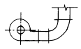
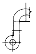
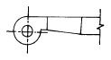
(정답률: 44%)
53. 건조공기 1kg을 함유한 습공기중의 수증기중량(kg)과 그 건조공기의 단위중량과의 중량비율은 무엇인가?(오류 신고가 접수된 문제입니다. 반드시 정답과 해설을 확인하시기 바랍니다.)
- 비교습도
- 절대습도
- 포화습도
- 포화도
(정답률: 22%)
54. 덕트의 보온목적 중 가장 적절하지 않는 것은?
- 결로방지를 위하여
- 급기덕트의 열손실을 방지하기 위하여
- 천장수납을 용이하게 하기 위하여
- 소음을 줄이기 위하여
(정답률: 57%)
55. 다음 설명 중 옳지 않은 것은?
- 노점온도는 절대습도에 의해 정해지며 절대습도가 클수록 낮아진다.
- 포화공기의 온도를 습공기의 노점온도라 한다.
- 노점온도란 공기중의 수증기가 응축하기 시작하는 온도를 말한다.
- 수증기량이 절대습도 보다 많으면 절대습도 이상의 수증기는 결로된다.
(정답률: 54%)
56. 휀 코일 유니트 방식은 배관방식에 따라 2관식,3관식,4관식이 있다.아래의 설명 중 적당치 못한 설명은?
- 3관식과 4관식은 냉수배관,온수배관을 설치하여 각 계통마다 동시에 냉난방을 자유롭게 할 수 있다.
- 4관식 중 2코일식은 냉수계와 온수계가 완전 분리되므로 냉온수간의 밸런스 문제가 복잡하고 열손실이 많다.
- 3관 방식은 환수관에서 냉수와 온수가 혼합되므로 열손실이 생긴다.
- 환경 제어성능이나 열손실 면에서 4관식이 가장 좋으나 설비비나 설치면적이 큰 것이 단점이다.
(정답률: 50%)
57. 동일 송풍기에서 회전수가 일정하고 직경이 d에서 d1으로 커졌을 때 동력 ㎾1은 다음 식중 어느 것인가?
- ㎾1 = (d1/d)2 Q
- ㎾1 = (d1/d)3 Q
- ㎾1 = (d1/d)4 Q
- ㎾1 = (d1/d)5 Q
(정답률: 52%)
58. 외기 온도가 -5℃이고, 실내 공급 공기온도를 18℃로 유지하는 히트 펌프(heat pump)가 있다. 실내 총열손실 열량이 50,000kcal/h일 때 외기로부터 침입되는 열량은 얼마인가?
- 43255kcal/h
- 43500kcal/h
- 46047kcal/h
- 50000kcal/h
(정답률: 52%)
59. 다음 설명 중 틀린 것은?
- 온수난방은 워터헤머가 생기지 않는다.
- 복사난방은 단열층이 필요하다.
- 온풍난방은 열용량이 적어 예열시간이 거의 없다.
- 증기난방은 예열 냉각이 빠르나 동파의 위험이 있다.
(정답률: 36%)
60. 간이계산법에 의한 건평 150 m2 에 소요되는 보일러의 급 탕부하는 얼마인가?(단, 건물의 열손실은 90 kcal/m2 h, 급탕량은 100 kg/h, 급수 및 급탕 온도는 30 ℃, 70 ℃이다.)
- 3,500 kcal/h
- 4,000 kcal/h
- 13,500 kcal/h
- 17,500 kcal/h
(정답률: 36%)
4과목: 전기제어공학
61. 주권선 양쪽에 각각 보호권선을 설치하여 어느 한 권선을 전원에 대하여 반대로 접속하여 회전방향을 바꾸는 전동기는?
- 반발기동형전동기
- 분상기동형전동기
- 콘덴서기동형전동기
- 셰이딩코일형전동기
(정답률: 43%)
62. 제어기기에는 검출기, 변환기, 증폭기, 조작기기 등이 있다. 서보전동기(Servo motor)는 어디에 속하는가?
- 증폭기
- 조작기기
- 변환기
- 검출기
(정답률: 44%)
63. 10층 건물에 적재 무게가 1000kg이고, 속도가 50m/min인 엘리베이터를 설치할 때 여기에 필요한 전동기의 용량은 약 몇 kW 인가?(단, 전동기의 효율은 80%이다.)
- 6
- 8
- 10
- 12
(정답률: 30%)
64. 논리식 A+BC 와 등가인 논리식은?
- AB+AC
- (A+B)(A+C)
- (A+B)C
- (A+C)B
(정답률: 38%)
65. 무인운전을 시행하기 위한 제어에 해당되는 것은?
- 정치제어
- 추종제어
- 비율제어
- 프로그램제어
(정답률: 57%)
66. 100V용 전구 30W, 60W 두 개를 직렬 연결하고 직류 100V 전원에 접속하였을 때 두 전구의 상태로 옳은 것은?
- 30W가 더 밝다.
- 60W가 더 밝다.
- 두 전구가 모두 켜지지 않는다.
- 두 전구의 밝기가 모두 같다.
(정답률: 62%)
67. 그림은 전동기 제어회로의 일부이다. 이 회로의 기능으로 볼 수 없는 것은?
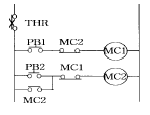
- 자기유지회로
- 인터록회로
- 정.역 운전회로
- 과부하 정지회로
(정답률: 47%)
68. 정격 600W 전열기에 정격전압의 80%를 인가하면 전력은 몇 W 로 되는가?
- 384
- 486
- 545
- 614
(정답률: 41%)
69. 온도를 임피던스로 변환시키는 요소는?
- 측온저항
- 광전지
- 광전다이오드
- 전자석
(정답률: 43%)
70. 자동제어계에서 이득이 높아지면?
- 정상오차가 증가한다.
- 과도응답이 진동하거나 불안정하게 된다.
- 응답이 빨라진다.
- 정정시간이 짧아진다.
(정답률: 21%)
71. 정전용량이 같은 콘덴서 10개가 있다. 이것을 병렬로 접속할 때의 값은 직렬로 접속할 때의 몇 배가 되는가?
- 0.1
- 1
- 10
- 100
(정답률: 28%)
72. 추치제어가 아닌 것은?
- 탱크의 레벨제어
- 자동 아날로그 선반제어
- 열처리로의 온도제어
- 보일러의 자동연소제어
(정답률: 30%)
73. 고압 전기기기의 절연저항 측정에 관한 사항으로 옳지 않은 것은?
- 절연저항은 무한대의 값을 갖는 것이 가장 이상적이다.
- 메거의 선(L)단자에 기기의 코일단자를 연결한다.
- 메거의 접지(E)단자에 기기 외함을 연결한다.
- 절연저항의 측정치는 10Ω이하가 적당하다.
(정답률: 56%)
74. 그림은 릴레이 접점에 의하여 자기유지회로를 구성한 것이다. 이를 논리게이트 회로로 그릴 때 옳은 것은?
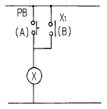
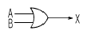
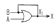
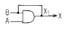
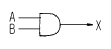
(정답률: 47%)
75. 유도전동기에서 슬립이 "0" 이란 의미와 같은 것은?
- 유도전동기가 동기속도로 회전한다.
- 유도전동기가 전부하 운전상태이다.
- 유도전동기가 정지상태이다.
- 유도제동기의 역할을 한다.
(정답률: 49%)
76. 내부저항이 20kΩ이고, 최대눈금이 200V인 전압계와 내부저항이 15kΩ이고, 최대눈금이 200V인 전압계를 직렬로 접속하여 측정할 때 최대 몇 V 까지 측정할 수 있는가?
- 250
- 300
- 350
- 400
(정답률: 45%)
77. PＩ제어동작은 정상특성 즉, 제어의 정도를 개선하는 지상요소인데 이것을 보상하는 지상보상의 특성으로 옳은 것은?
- 주어진 안정도에 대하여 속도편차상수가 감소한다.
- 시간응답이 비교적 빠르다.
- 이득 여유가 감소하고 공진값이 증가한다.
- 이득 교점 주파수가 낮아지며, 대역폭은 감소한다.
(정답률: 24%)
78. 입력으로 단위계단함수 u(t)를 가했을 때, 출력이 그림과 같은 조절계는?
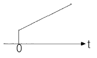
- 2위치 동작
- P 동작
- PＩ동작
- PD 동작
(정답률: 42%)
79. kVA는 무엇의 단위인가?
- 유효전력
- 피상전력
- 효율
- 무효전력
(정답률: 50%)
80. 블럭선도에서 신호의 흐름을 반대로 할 때, ⓐ에 해당하는 것은?
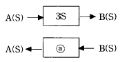
- 3S
- -3S
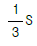
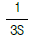
(정답률: 54%)
5과목: 배관일반
81. 용접식 이음쇠인 롱 엘보(long elbow)의 곡률 반경은 강관 호칭지름의 몇배인가?
- 2.5배
- 2배
- 1.5배
- 1배
(정답률: 34%)
82. N : 인원수, q : 1인 1일당 급탕량(ℓ /d· 인), h : 하루 사용량에 대한 1시간당 최대 급탕량의 비율, e : 하루 사용량에 대한 가열용량의 비율,th : 탕의 온도(℃), tc :물의 온도(℃)일 때 가열기 능력 H(㎉/h)을 구하는 식은?
- H = N· q· h· (th - tc)
- H = N· q· e· (th + tc)
- H = N· q· e· (th - tc)
- H = N· q· h· (th + tc)
(정답률: 36%)
83. 급수배관의 보온재 선택방법에 관한 설명이다. 잘못된 것은?
- 대상온도에 충분히 견딜 수 있을 것.
- 소요의 성능치가 소정의 사용연한 중에 변하지 않을 것.
- 열 전도율이 클 것.
- 값이 쌀 것.
(정답률: 48%)
84. 다음 강관 이음쇠 중 분기관을 낼 때 사용되는 부품이 아닌 것은?
- 티
- 크로스
- 와이
- 엘보우
(정답률: 54%)
85. 다음은 온수난방 배관의 부식에 관한 사항이다. 이중 옳은 것은?
- 사용온수온도가 높아짐에 따라 부식의 정도는 심하게 된다.
- 유속이 늦어질수록 부식의 정도는 심하다.
- 증기난방의 배관보다 부식이 심하다.
- 경질염화비닐 라이닝 강관은 내식성이 우수하여 온수 난방배관용으로 많이 이용되고 있다.
(정답률: 33%)
86. 매설 가스 배관법 중 맞지 않는 것은?
- 물이 고일 염려가 있는 곳은 수취기를 설치한다.
- 배관은 적당한 앞올림 구배를 두어 접합한다.
- 다른 지하 매설물과는 적당한 거리를 두어야 한다.
- 매설관은 중압인 경우 PE관을 사용한다.
(정답률: 42%)
87. 급수배관에서 수격작용을 방지하는 방법은?
- 적당한 배관구배를 준다.
- 수압을 높인다.
- 급폐쇄형 밸브 근처에 공기실을 설치한다.
- 보온을 철저히 한다.
(정답률: 44%)
88. 최고 사용압력이 38㎏/㎝2인 배관은 SPP - 38이다. 안전율을 4로 하였을 때 적당한 관의 스케줄 번호는?
- 10
- 20
- 40
- 60
(정답률: 39%)
89. 공기조화 설비의 배관에서 브라인이나 증기의 응축수 등 부식성이 있는 액체를 통과시켜야 할 경우 다음 배관재료 중 가장 좋은 것은?
- 주철관
- 강관
- 스테인레스강관
- 연관
(정답률: 45%)
90. 급수설비 설계시 급수량 산정방법이 아닌 것은?
- 급수 인원수에 의한 방법
- 건물의 유효 면적에 의한 방법
- 위생 기구수에 의한 방법
- 급수설비 장비용량에 의한 방법
(정답률: 24%)
91. 신축관 이음쇠의 형식으로 맞지 않는 것은?
- 벨로우즈형
- 플랜지형
- 루우프형
- 슬리이브형
(정답률: 58%)
92. 다음 중 관의 지지 금속설치 시공시 고려해야 할 사항이 아닌 것은?
- 관의 신축
- 배관구배의 조절
- 배관중량
- 관내 수용 물질
(정답률: 49%)
93. 증기 및 물배관 등에서 찌꺼기를 제거하기 위하여 설치하는 부속품은?
- 유니온
- 피(P)트랩
- 첵크 밸브
- 스트레이너
(정답률: 63%)
94. 다음 신축이음 방법중 고압에 잘 견딜수 있는 이음방법은 어느 것인가?
- 슬리이브이음
- 스위블이음
- 신축곡관이음
- 벨로우즈이음
(정답률: 38%)
95. 열을 잘 반사하고 확산하므로 방열기 표면 등의 도장용으로 좋은 도료는 어느 것인가?
- 광명단
- 산화철
- 합성수지
- 알루미늄
(정답률: 45%)
96. 벤더(bender)에 의한 작업중에 관이 파손되는 원인이 아닌 것은?
- 굽힘형의 홈이 관지름보다 작다.
- 굽힘반지름이 너무 작다.
- 압력의 조정이 세고 저항이 크다.
- 받침쇠가 너무 나와 있다.
(정답률: 36%)
97. 공조용 배관중 배관 샤프트 내에서 단열시공을 하지 않는 배관은 어느 것인가?
- 온수관
- 냉수관
- 증기관
- 냉각수관
(정답률: 47%)
98. 다음 중 온수난방 배관설비에 관계 없는 것은?
- 리터언 코크
- 리버어스 리터언 배관
- 스위블 죠인트
- 하아트포드 접속법
(정답률: 29%)
99. 다음 그림을 보고 소음기 설치위치로 가장 적당한 곳은?
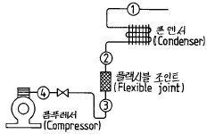
- ①에 설치한다.
- ②에 설치한다.
- ③에 설치한다.
- ④에 설치한다.
(정답률: 30%)
100. 급탕설비 배관의 압력손실 요인에 대한 다음 설명 중 옳지 않은 것은?
- 배관 이음부에 의한 압력손실
- 직관의 내부 거칠기에 의한 압력손실
- 배관의 수직 상향에 의한 압력손실
- 관내외 온도차에 의한 압력손실
(정답률: 37%)